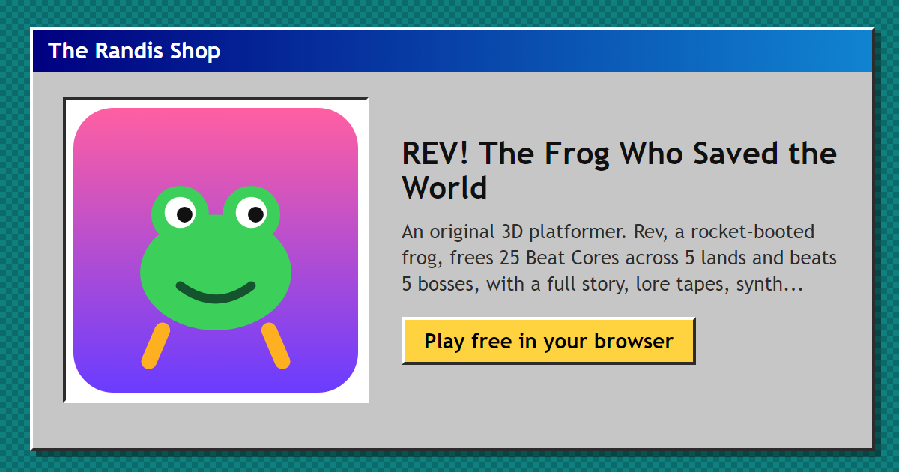

REV! The Frog Who Saved the World

An original 3D platformer. Rev, a rocket-booted frog, frees 25 Beat Cores across 5 lands and beats 5 bosses, with a full story, lore tapes, synth music, gamepad support and saved progress.
Made with Randis UDS, a free desktop app that builds the tools you describe.